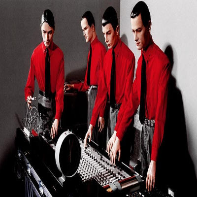
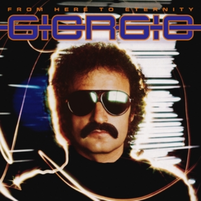
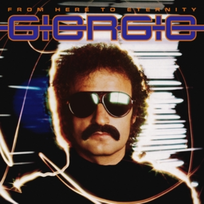
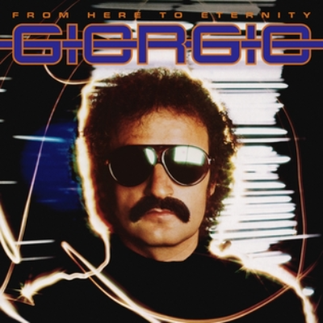

Kraftwerk er þýskt band sem í raun startaði EDM væðingunni með Giorgio Moroder og Donna Summer.
Kraftwerk
Fyrsta lag Kraftwerk heitir Ruckzuck þar sem þeir notuðu gítar, orgel, fiðlu og trommur og var þetta eins raw og það gerist, tæpt að það var hægt að kalla þetta EDM þar sem það var engin tækni notuð við gerð lagsins.

Efst á síðu
Donna Summer
Donna Summer var amerísk söngkona sem byrjaði sinn feril í EDM með lagi sem heitir Wasserman, sem var þýsk þýðing á laginu Aquarius frá söngleiknum Hair.Efst á síðu

Efst á síðu
Subgenres
Það eru til verulega margar subgenres af EDM. Þetta eru þær helstu
Techno: Sem er þekkt fyrir að vera frekar minimalíst.
Juan Atkins
Juan Atknis var þekktur sem "The Originator" þar sem hann byrjaði með techno. En árið 1955 gáfu bandaríska tónlistartækniútgáfan Keyboard Magazine heiðraði hann sem einn af 12 Who Count í sögu þessarar subgenres.
Efst á síðuHouse: Einkennist af takti með four-on-the-floor takti og fallegum/sálarríkum söng.
David Guetta
Hann er þekktur sem einn af bestu ef bara ekki besti House artist, hann byrjaði sinn feril með lagi sem heitir Just a Little More Love með bandaríska söngvaranum Chris Willis. En hann hefur gert lög með liggur við hvaða artista sem er frá Bandaríkjunum.
Er einn af bestu Trance artistum, einn af mínum uppáhalds líka. Hollenski DJ'inn hefur verið að spila í 22 ár, fyrsta lagið hans var lag sem hann gaf út árið 1996 sem heitir Blue Fear.
Það sem er í miklu uppáhaldi hjá mér núna er subgenre sem heitir hardstyle, það sem skilgreinir hardstyle er hratt tempó, hard kicks, sem sagt feitur bassi, melódísk melódía uppbyggingar og hápunktar, síðan er ákveðið þema og andrúmsloft. Margir sem eru mikið í ræktinni nota akkúrat annað hvort hard rock eða hardstyle til að ýta sér áfram að ná þessari seinustu lyftu, jafnvel blöndu af þessu. Þetta er síðan uppáhaldslagið mitt frá þessari subgenre; Queen of Kings - Da Tweekax x Tungevaag Remix.Efst á síðu
 Efst á síðu

Efst á síðu
Efst á síðu

Efst á síðu